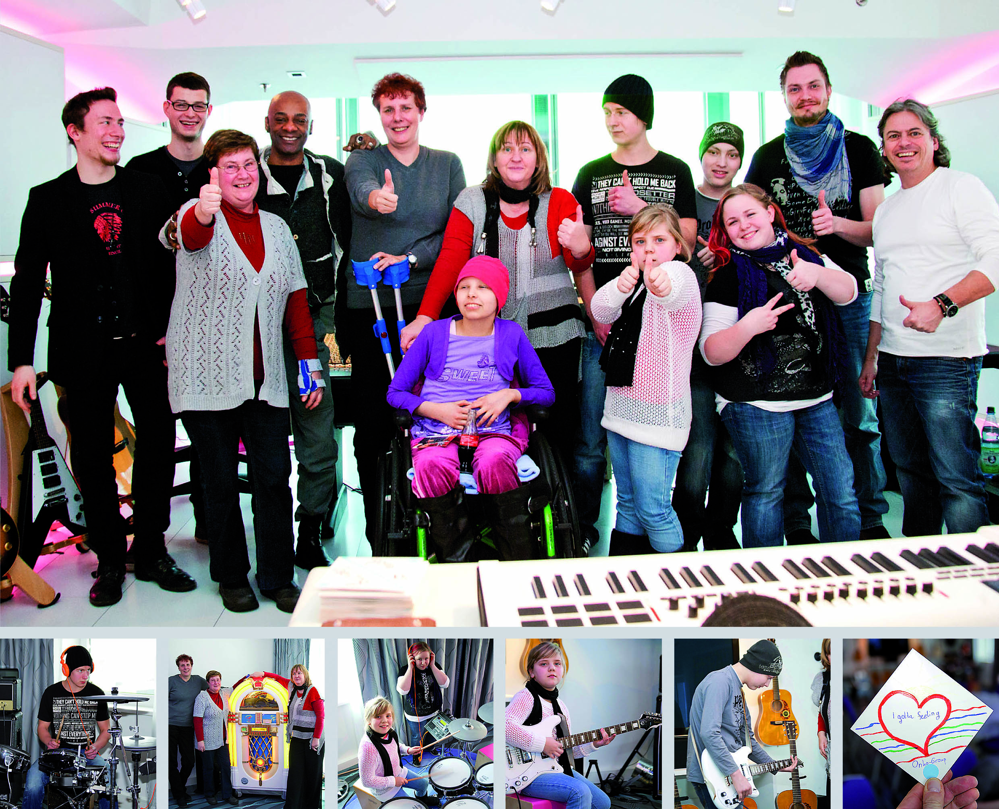
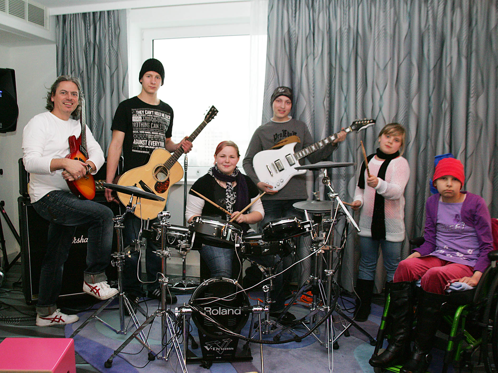

Viele krebskranke Kinder fühlen sich irgendwann als Verlierer.
Während ihre Freunde zur Schule gehen, Sport treiben, Konzerte besuchen oder sich zum Eisessen treffen, verbringen sie Wochen oder Monate zwischen Chemotherapie, Blutabnahmen und Untersuchungen. Irgendwann entsteht fast zwangsläufig das Gefühl, vom normalen Leben ausgeschlossen zu sein. Ich wollte dieses Gefühl durchbrechen.
Mein Ziel war nicht, die Krankheit vergessen zu machen. Das wäre sowieso unmöglich gewesen. Aber ich wollte den Kindern Erlebnisse schenken, die ihre gesunden Freunde eben nicht hatten. Sie sollten nach Hause kommen und erzählen können: „Stell dir vor, ich habe heute meine eigene CD aufgenommen.“ So entstand die Idee eines Musikprojekts.
Zunächst suchte ich Unterstützung bei Jack White, den ich bei einer Veranstaltung im Jüdischen Museum kennengelernt hatte. Er hörte sich mein Anliegen freundlich an, sah für sich aber keine Möglichkeit mitzumachen. Also suchte ich weiter.
Schließlich führte mich der Weg in die Hansa Studios. Dort lernte ich René Rennefeld kennen. Ich hatte sogar einige meiner eigenen am Computer produzierten Lieder auf CD mitgebracht. René hörte sie sich geduldig an und meinte anschließend mit einem Lächeln, sie seien wahrscheinlich nicht ganz das Richtige für ein Kinderprojekt. Aber die Idee gefiel ihm.
Einige Zeit später wechselte René in das Tonstudio des Berliner Musikhotels nhow an der Spree. Dort meldete er sich wieder bei mir. „Jetzt machen wir es.“ Gemeinsam entwickelten wir einen Tag, den unsere Kinder hoffentlich nie vergessen würden.

Die Vereine organisierten den Transport. Früh am Morgen brachte ein Bus die Jugendlichen aus unserer Kinderklinik nach Berlin-Mitte. Dort erwartete sie kein Krankenhaus, sondern ein professionelles Musikstudio, genau so, wie bekannte Künstler dort ihre Songs produzierten.
René führte die Kinder zunächst durch das Studio. Sie durften Schlagzeug spielen, Gitarren ausprobieren, an Mischpulten sitzen und erleben, wie Musik heute produziert wird. Für viele war das eine völlig neue Welt. Dazu kamen professionelle Musiker, die mit den Kindern Gesangsübungen machten und ihnen jede Scheu nahmen. Die Berliner Morgenpost berichtete später unter der Überschrift „Popstar für einen Tag“ über dieses außergewöhnliche Projekt.
Am Nachmittag kam der Höhepunkt. Gemeinsam nahmen die Kinder ihren eigenen Song auf. Die Wahl fiel auf I've Got a Feeling. Die Jugendlichen sangen gemeinsam den Refrain ein, hörten anschließend im Regieraum zu, wie ihre Stimmen bearbeitet und gemischt wurden, und konnten kaum glauben, wie professionell das Ergebnis klang.

Während die Toningenieure den letzten Schliff vornahmen, gestalteten die Kinder ihre eigenen CD-Cover. Als sie am späten Nachmittag das Studio verließen, hielt jeder seine ganz persönliche CD in den Händen. Es war weit mehr als eine CD. Es war der Beweis, dass sie etwas geschafft hatten, was nur wenige Kinder jemals erleben würden. Genau das war die eigentliche Idee.
Nicht Mitleid, und auch nicht Ablenkung, sondern Selbstbewusstsein. Ich wollte, dass unsere Patienten nach Hause kommen und ihren Freunden erzählen konnten:
„Ich war heute im Tonstudio und habe meine eigene CD aufgenommen.“
Vielleicht war das nur ein einziger Tag. Aber manchmal reicht ein einziger besonderer Tag aus, damit ein krankes Kind sich nicht mehr nur als Patient fühlt, sondern wieder als jemand, der etwas Besonderes erlebt hat.